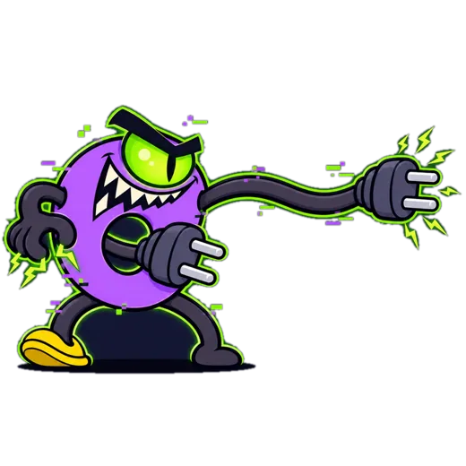
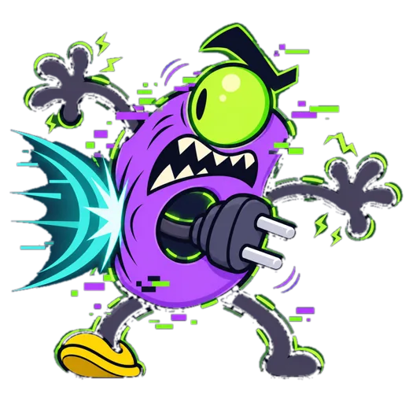
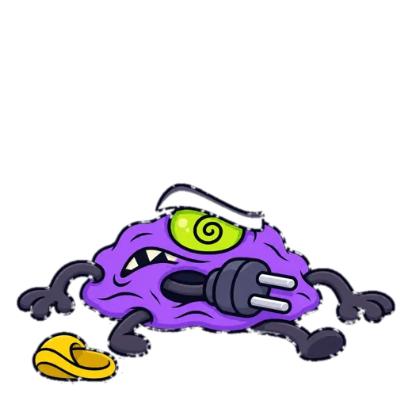
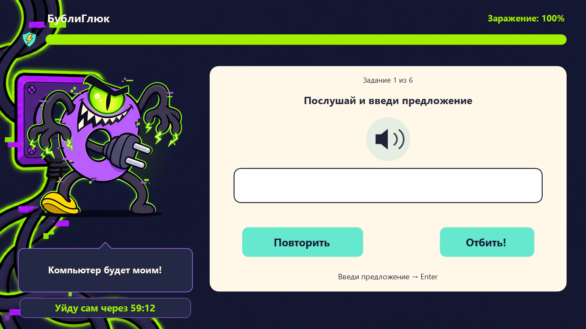
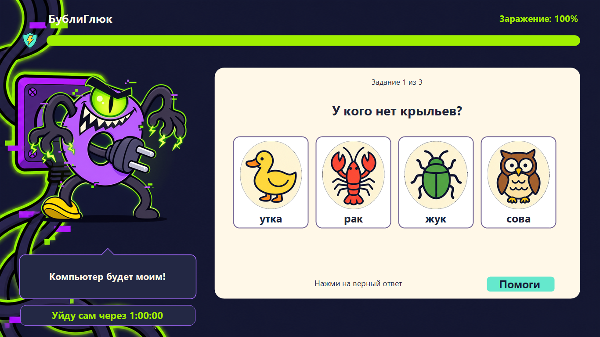

01 / АТАКАЭкран захвачен
Звук других приложений выключается, экран закрывает окно без крестика. БублиГлюка при этом слышно: он пришёл диктовать и задавать примеры.
Windows 10/11 · Бесплатно · 1 класс, 2 четверть
Раз в 15–20 минут БублиГлюк захватывает экран. Чтобы его победить, нужно выполнить 4–6 заданий: два коротких диктанта, примеры и задания со словами или картинками.
Версия 1.7.2 · Диктанты по одному слову из двух слогов.
Я написал Глюкобой для своего сына Дани. Он в первом классе и всё время смотрит видео на ноутбуке. Программа помогает прерваться и немного позаниматься.
Задания подобраны под него: 1 класс, вторая четверть. Здесь одна сложность, короткие диктанты, простые примеры, слоги и картинки.
Всё это без вмешательства родителя: программа сама прерывает видео и усаживает за задания. С вами ребёнок будет спорить, с БублиГлюком — никак.
— Автор Глюкобоя
У БублиГлюка опять свои планы.

01 / АТАКАЗвук других приложений выключается, экран закрывает окно без крестика. БублиГлюка при этом слышно: он пришёл диктовать и задавать примеры.

02 / ЗАДАНИЯНаписать услышанное слово, собрать слово из слогов, выбрать картинку или решить пример. Верный ответ бьёт вирус: снаряд, искры, «Два подряд!».

03 / ПОБЕДАПосле 4–6 заданий экран свободен, звук возвращается. БублиГлюк улетает на шарике, уезжает на тележке или прячется за щитом. Финалы чередуются.
1 КЛАСС · 2 ЧЕТВЕРТЬ
Одна сложность без выбора класса и уровня. В диктанте одно слово из двух слогов и четырёх букв. Математика в пределах 10, сборка слов из трёх слогов и 60 карточек выбора. Все задания уже внутри программы.
С 21:00 до 07:00 — перегрев, ремонт, очистка от глюков или большое обновление. Каждый вечер одна история: БублиГлюк всё сделает сам. С 07:00 до 09:00 — свободное утро без атак. Время настраивается.
По будням с 08:20 до 09:00 — экран «Пора в школу!» с обратным отсчётом. Если сегодня в школу не надо, внизу есть кнопка: за ней пример вроде 64 × 83, его решит взрослый, и экран уйдёт до завтра.
КАРТИНКИ И АНИМАЦИИ
БублиГлюк въезжает на тапке, подпрыгивает пружинкой и крутится от верного ответа. Пока ребёнок занят заданием, движения спокойные. В диктанте есть «Повторить», на остальных карточках — «Помоги». Активность анимации можно уменьшить.
ЧЕСТНЫЙ ВЫБОР
Если экран атаки час никто не трогает, вирус уходит сам — на экране таймер «Уйду сам через 59:41». Следующая атака ждёт, пока ребёнок вернётся, и приходит через обычные 15–20 минут: из школы его вирус не встречает.
ОБНОВЛЕНИЕ ПО ЗАПРОСУ
Голос, картинки и задания встроены в exe. Новую версию ставит скрипт Обновить.cmd, когда вы его запустите. Ваши настройки и старые личные файлы сохраняются.
Версия 1.7.2
Теперь в диктанте одно простое слово из двух слогов: «мама», «папа», «каша», «рыба», «луна». Всего 20 слов по четыре буквы. БублиГлюк произносит слово целиком, Даня вводит его. На экране только инструкция, значок динамика и поле ввода.
Перед первым диктантом атаки один раз звучит: «Даня, привет. Я Бублиглюк. Попробуй ввести, что я говорю.» Дальше повторяется только текущее слово с паузой пять секунд после каждого произнесения. Повторы продолжаются до верного ответа. Кнопка «Повторить» начинает слово заново без приветствия.
Голос Windows Irina записан заранее и встроен в exe вместе с паузами. Сеть и установка голоса не нужны. Другие приложения на время атаки замолкают, БублиГлюка слышно. После ошибки текст остаётся для исправления: «Послушай ещё раз». Принимаются разный регистр, лишние пробелы, конечная точка и ё/е.

Четыре: два диктанта, математика и слоги либо выбор картинки. Пять: два диктанта, математика, слоги и выбор. Шесть: два диктанта, две математики, слоги и выбор. Победа — после последнего задания.
Четыре картинки и понятный признак: «Кто не живёт в воде?», «У кого нет крыльев?». Больше животных, растений, еды и домашних вещей.
«У кого иглы?», «Что укроет от дождя?» — прочитай вопрос и нажми на подходящий предмет.
Продолжи ряд фигур или чисел в пределах 10. Найди правило и выбери следующий элемент.
Две ошибки — другая карточка. Это правило действует только при выборе варианта. Решённые задания сохраняются, замена не засчитывается как ответ, а правильная кнопка меняет место. Быстрые повторные нажатия игнорируются. В заданиях с вводом слова или числа ребёнок продолжает исправлять ответ на той же карточке.
Диктант после двух ошибок не заменяется: введённый текст остаётся, слово можно слушать и исправлять сколько угодно.

Слова — из трёх слогов: «со + ба + ка», «ра + ке + та». Не больше шести букв. Сложение — из трёх простых чисел: 1 + 2 + 3. Вычитание и пропущенное число — по прежним правилам.
У задач с текстом 12 разных тем: сад, книги, автобус, утки, рисунки и другие. Они решаются одним действием. Все задания работают без интернета.
Перегрев остаётся. В другие вечера БублиГлюк чинит сбой, ловит глюки или занимается обновлением. Он объясняет, почему компьютер сейчас недоступен, и уверенно берётся за дело.
Одна история на всю ночь, включая перезапуск и переход через полночь. Можно оставить только перегрев: NightModes=overheat. Это сюжеты игры; системные настройки Windows программа не ремонтирует и не обновляет.
С 20:45 до 21:00 новые атаки не появляются. Последние 15 минут перед ночью свободны от новых заданий — даже в тестовом режиме и при ручном вызове. Атака, начавшаяся раньше, может продолжаться. Предупреждение остаётся в 20:55; при изменении времени ночи перерыв сдвигается вместе с ним.
Сохранено поведение версии 1.6.4: каждый запуск сверяет расписание. Ночью программа сразу включает ночной экран; повторный запуск тоже возвращает его. Скрытое или свёрнутое окно восстанавливается. Ctrl+Alt+N пропускает ночь до утра либо до нового запуска.
Нужен Windows 10/11. Используется встроенный .NET Framework 4.
Обновить.cmd из папки с программой.Glukoboy.exe.Program Files — нет.settings.ini появится сам; задания, голос и картинки уже встроены. Выбирать класс или уровень не нужно.settings.ini и перезапустите программу. Для первой атаки нажмите Ctrl+Alt+B. Выход — Ctrl+Alt+Q.Включить автозапуск.cmd под учётной записью ребёнка. Права администратора не нужны. После обычного обновления скрипт появится рядом с exe. Если перенесёте папку программы, запустите его снова.Действующая сложность одна: 1 класс, вторая четверть. Расписание и число заданий можно менять.
Счёт доMathMax | 10 |
Атака каждые, минутIntervalMin / IntervalMax | 15–20 |
Заданий за атакуTaskMin / TaskMax | 4–6 |
Ночной режимNightFrom / NightTo | 21:00–07:00 |
Свободное утро, без атакFreeFrom / FreeTo | 07:00–09:00 |
Пора в школу, экранSchoolFrom / SchoolTo / SchoolDays | 08:20–09:00, пн–пт |
Атака уходит сама, если не трогатьIdleLeave | 60 мин |
Тестовый режимTestMode | выкл |
settings.ini рядом с Glukoboy.exe в Блокноте.= и сохраните файл.Glukoboy.exe снова.Пример: пять заданий за атаку, перерыв 30–40 минут.
TaskMin=5 TaskMax=5 IntervalMin=30 IntervalMax=40
Старые диапазоны 3/4 и 4/5 означают 4–6; фиксированные 4/4, 5/5 и 6/6 сохраняются. Прежние Grade и Level игнорируются. tasks.txt больше не читается и не создаётся; личные старые файлы остаются нетронутыми. Все настройки — в README.
Глюкобой — игра, которая прерывает просмотр и заставляет немного порешать. Родительского контроля и защиты здесь нет. Ребёнок, знакомый с диспетчером задач, закроет программу.
Exe не подписан. Windows SmartScreen может предупредить о запуске. Если вы доверяете скачанному файлу: «Подробнее → Выполнить в любом случае».
Исходники открыты, сборка — через встроенный csc.exe. Настройки и все клавиши родителя — в README.